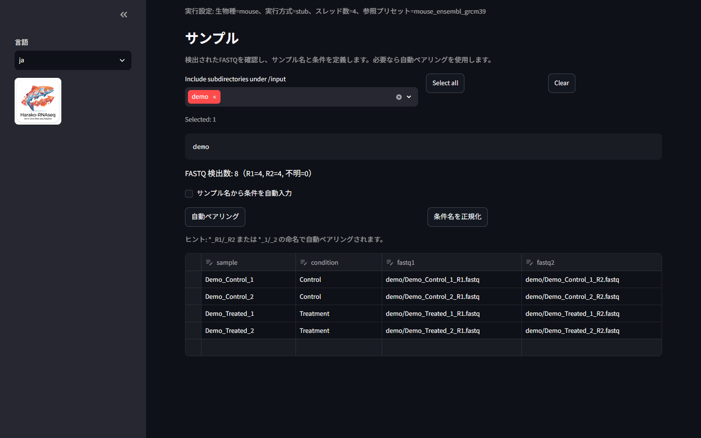
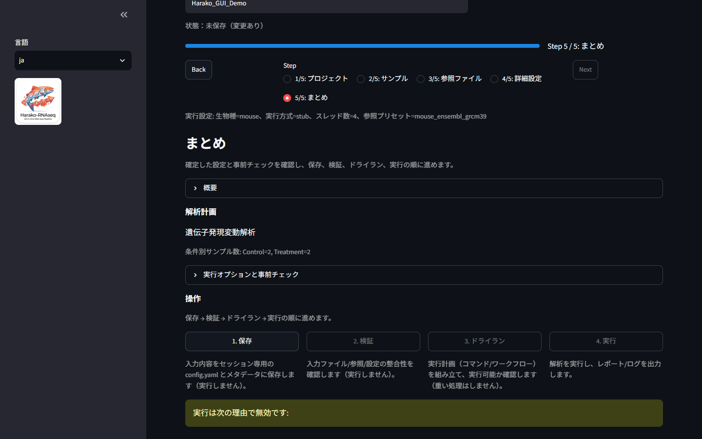

{kind=link}
{kind=link}
QC-onlyモード
DESeq2による遺伝子発現変動解析には、2条件以上、かつ各条件に2つ以上の有効なサンプルが必要です。これはソフトウェアが適用する最小サンプル数要件であり、統計的検出力の計算、生物学的独立性の証明、実験計画の妥当性確認ではありません。入力形式に問題がなくても最小サンプル数要件を満たさない場合はQC-onlyモードで処理を継続し、p値および調整p値を算出・出力しません。統計的推論に用いるコントラストは無効となり、エンリッチメント解析も実行しません。
Public beta · v0.3.0-beta.1
FASTQからDESeq2までのバルクRNA-seq解析ワークフロー
FASTQの前処理、Salmonによる転写産物定量、tximportによる遺伝子レベルの集計、DESeq2解析、自己完結型HTMLレポート作成までを実行するDockerベースのGUIワークフローです。
FASTQ → fastp → Salmon → tximport → DESeq2／QC-only → HTMLレポート
各条件の最小サンプル数要件を満たさない場合はQC-onlyモードで処理を継続し、p値や調整p値は算出・出力しません。
v0.3では、条件割り当てを明示し、実行前に承認ハッシュの完全一致を確認する、ローカル自動化向けの機械可読インターフェースを追加しました。対応している解析処理の検証と実行はHarakoが担い、自動化ツールが解析の適格性を決定したりHarakoの実行経路を置き換えたりすることはありません。条件を自動推測せず、OpenAI SDK、モデル、APIへの依存関係も組み込みません。
Harako-RNAseqは、再開可能なSnakemakeワークフローを単一のDockerイメージにまとめたRNA-seq解析GUIです。入力データと解析結果は、指定したローカルディレクトリに保存されます。
Docker RNA-seqパイプライン
fastpでリードを前処理し、Salmonで転写産物を定量します。tximportで遺伝子レベルのカウント値とTPMを作成し、各条件の最小サンプル数要件を満たす場合に限ってDESeq2による遺伝子発現変動解析（differential expression analysis）を実行します。
検出したFASTQ、サンプルと条件の割り当て、参照データ、解析計画を確認してから解析を開始できます。


DESeq2による遺伝子発現変動解析には、2条件以上、かつ各条件に2つ以上の有効なサンプルが必要です。これはソフトウェアが適用する最小サンプル数要件であり、統計的検出力の計算、生物学的独立性の証明、実験計画の妥当性確認ではありません。入力形式に問題がなくても最小サンプル数要件を満たさない場合はQC-onlyモードで処理を継続し、p値および調整p値を算出・出力しません。統計的推論に用いるコントラストは無効となり、エンリッチメント解析も実行しません。
tximportは遺伝子レベルのカウント値と、発現量の指標として遺伝子レベルTPMを出力します。DESeq2はカウント値を使用し、TPMは使用しません。
組み込みのヒト、マウス、ラットには、SHA-256で固定・検証されたEnsembl参照プリセットを提供し、参照データの来歴情報を各Runに記録します。カスタム参照の互換性は利用者が確認する必要があり、SHA-256チェックサムの一致は同一ファイルであることを示しますが、生物学的な適合性は保証しません。
シングルエンド／ペアエンドFASTQに加え、SRA/ENAのアクセッション番号からデータを取得する機能も利用できます。
結果は外部のWebリソースに依存しないHTMLレポートにまとめられます。解析後も単一ファイルとして閲覧・共有できます。
Run開始時に、設定、サンプル表、解析モードの判定情報、参照配列とアノテーションの由来情報を保存し、その後は変更しません。Snakemakeにより、中断した処理を同じ設定で再開できます。
Harako-RNAseqの名称は、「はらこ（鮭の卵）」と、着想源となったSalmon中心のRNA-seqパイプラインであるikraに由来します。HARAKOは、Human-Auditable, Reproducible Analysis Kit and Orchestratorという後付けの頭字語（backronym）としても位置づけています。これは、人による明示的な確認、再現可能なRun記録、解析キット、制御されたワークフロー実行という現在の設計思想を表します。
人による確認・監査が可能であることは、関連する入力、判断、解析計画、来歴情報、出力を人が確認できるという意味であり、科学的妥当性を自動的に認定するものではありません。Harako-RNAseqは独立した実装であり、ikraの公式な後継または承認済みプロジェクトではありません。
Harako-RNAseqは、PolyForm Noncommercial License 1.0.0に基づくsource-availableの公開ベータ版として提供しています。学術研究および許可された非商用利用を対象とする、ローカル・単一ユーザー向けソフトウェアです。臨床的な検証は行われていません。Harako-RNAseqは、実験計画、生物学的独立性、参照選択の妥当性、統計的検出力を評価しません。データ管理と結果の解釈は利用者が行います。